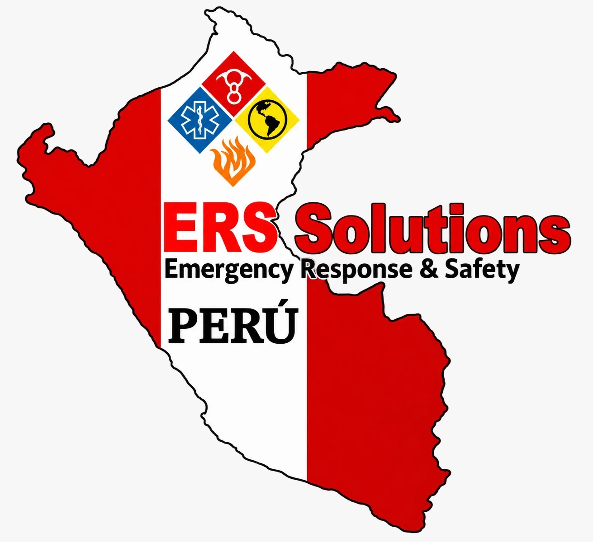
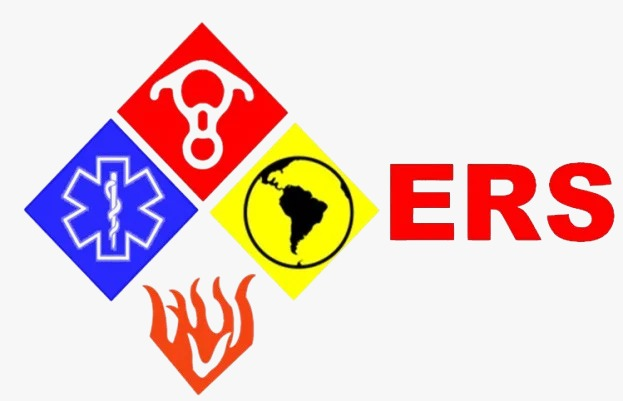
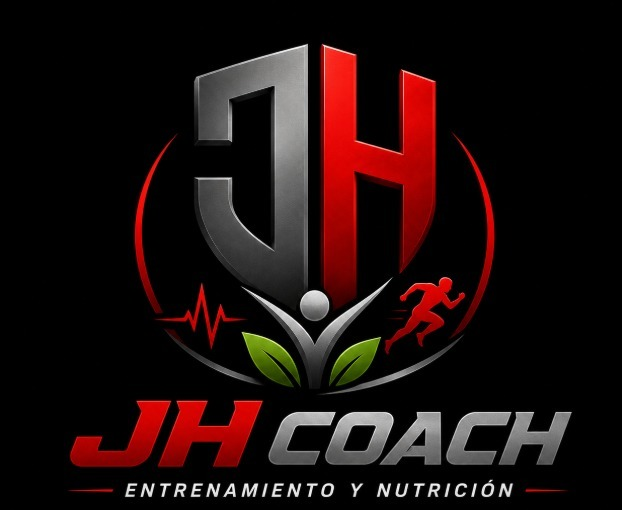
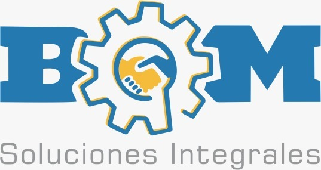

Software a tu medida
Un sistema que se adapta a tu operación. Gestiona, organiza y toma decisiones desde un solo lugar.
INNOVACIÓN Y TECNOLOGÍA
Creamos páginas web, software a medida y soluciones con IA para que tu negocio llegue más lejos.
CONFIANZA QUE SE CONSTRUYE
Relaciones reales.
Soluciones que nacen de escuchar.




01 / LO QUE PODEMOS CREAR
Cada negocio tiene su propia forma de avanzar. Construimos las herramientas que acompañan la tuya.
Un sistema que se adapta a tu operación. Gestiona, organiza y toma decisiones desde un solo lugar.
Tu marca merece una presencia digital clara, atractiva y fácil de usar en cualquier pantalla.
Haz más simples las tareas de cada día con asistentes, chatbots y procesos automatizados.
TECNOLOGÍA EN ACCIÓN
Una web que presenta tu marca. Un sistema que organiza tu operación. Un asistente que simplifica tu día.
Explora las tres ideas con las pestañas.
Encuentra tu soluciónTODO EN SU LUGAR
Tu esencia, una experiencia que conecta.
INTELIGENCIA QUE TE ACOMPAÑA
02 / DE LA IDEA A LA REALIDAD
Una muestra de la experiencia detrás de LT.
Vistas conceptuales de las soluciones desarrolladas.
Servicios, especialidades y proyectos reunidos en una presencia digital propia.
03 / DETRÁS DEL CÓDIGO
Soy Luis Tello, desarrollador y creador de LT Soft & Systems. Convierto necesidades reales en herramientas digitales útiles, con atención al detalle y comunicación directa.
Desde Cajamarca, acompaño a negocios y emprendedores a dar su siguiente paso digital.
ASÍ CONSTRUIMOS TU PROYECTO
Entendemos tu negocio, tus necesidades y lo que quieres lograr.
Definimos el alcance y diseñamos una experiencia pensada para tus usuarios.
Desarrollo, pruebas y ajustes para convertir la propuesta en una solución funcional.
Te acompaño en la puesta en marcha y acordamos el soporte que tu proyecto necesita.
SIN VUELTAS
Las buenas preguntas también
son parte del proceso.
No. Podemos comenzar con el problema que quieres resolver. A partir de ahí definimos los objetivos, las funciones necesarias y una primera versión viable.
Depende de sus funciones, complejidad e integraciones. Después de conocer tu necesidad, recibirás una propuesta con alcance, entregables, tiempos y presupuesto.
Sí. Primero revisamos el código, la tecnología y los accesos disponibles. Con ese diagnóstico podemos proponer correcciones, mejoras de diseño o nuevas funciones.
El diseño se adapta a celulares, tablets y computadoras. La experiencia se define según el contenido y las tareas que tus usuarios necesitan realizar.
La propuesta especificará la puesta en marcha, las condiciones de garantía y las opciones de soporte. Las nuevas funciones y actualizaciones se acuerdan según su alcance.
TU IDEA ES EL PUNTO DE PARTIDA
Cuéntame qué tienes en mente.
El siguiente paso lo construimos juntos.